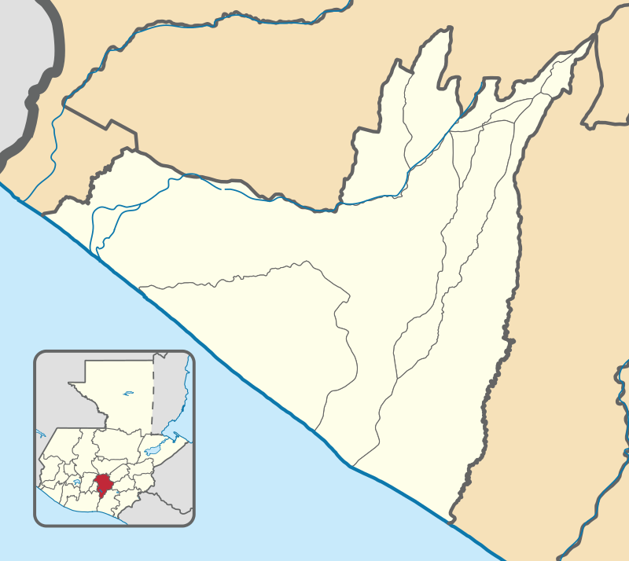
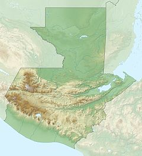

Topografía e Higrodrafía En el municipio no posee elevaciones de origen volcánico; en el norte, alcanza los 1,050 msn debido a que se inicia el sistema montañoso de la Sierra Madre; en el resto del municipio es completamente plano. En el sur del municipio, se encuentra algunas masas de agua como quebradas, arroyos, esteros, lagunetas y algunos ríos que atraviesan y desembocan en el mar como el Río Naranjo, el Río Samalá y el Río Ocosito. En el sureste y oeste posee costas en el océano Pacífico, aunque en el sur-centro no los posee ya que el municipio de Champerico lo rodea en ese sector.
 